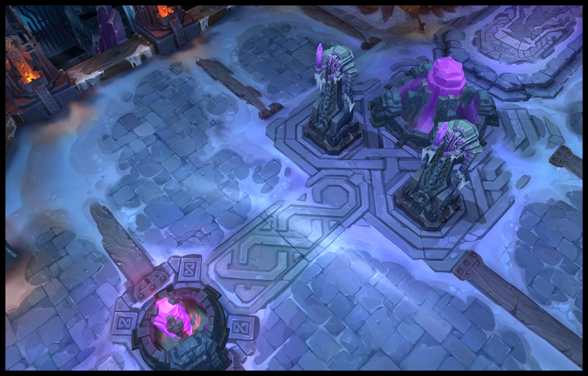
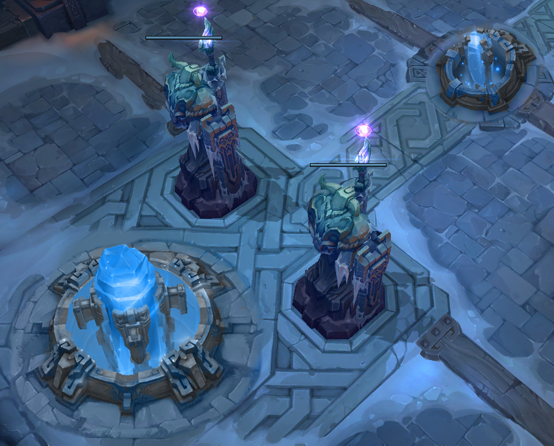

O único campo de batalha de uma rota disponível em League of Legends, Howling Abyss tem duas bases posicionadas em ambas as extremidades de uma ponte. Essa ponte é defendida por duas torres e um inibidor, embora o nexus seja protegido por um par de torres. Sem território neutro para lhe distrair da tarefa principal, Howling Abyss proporciona alguns dos confrontos em equipe mais frequentes e intensos de qualquer mapa.
 O objetivo de Howling Abyss é simples - destrua o nexus do inimigo. Para fazer isso, os campeões devem percorrer o caminho para atacar seu inimigo. Ambas as equipes têm sua rota defendida por numerosas torres. Cada torre aumenta a força quanto mais próximo ela chega ao seu respectivo nexus e cada torre deve ser eliminada para obter acesso à próxima torre nessa faixa.